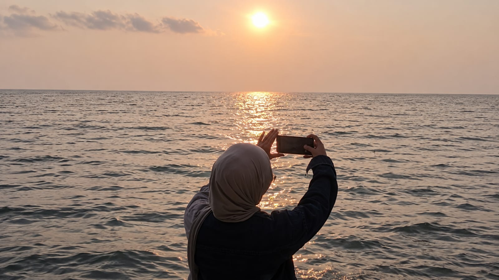

dunia explore
saya
Home
/ jelajahi hal lain yang saya sukai ♡
saya suka pantai
Saya suka pantai karena suasananya yang tenang, suara deburan ombak yang menenangkan, dan pemandangan laut yang indah. Pantai membuat saya merasa lebih rileks, bahagia, dan bisa sejenak melupakan kesibukan sehari-hari.
saya suka lembah
ini dia:
Saya suka lembah karena pemandangan alamnya yang indah, udara yang sejuk, dan suasananya yang tenang. Hamparan hijau dan perbukitan membuat saya merasa nyaman, rileks, dan lebih dekat dengan alam.
saya juga suka danau
- Saya suka danau karena suasananya yang tenang, airnya yang indah, dan pemandangan alam di sekitarnya. Duduk di tepi danau membuat saya merasa damai, rileks, dan nyaman menikmati keindahan alam.
bosan kan?
ya gimana inilah diriku memang membosankan:
- Terkadang aku merasa diriku membosankan karena tidak selalu pandai memulai percakapan atau menemukan hal menarik untuk diceritakan. Aku juga lebih nyaman menjadi diriku sendiri daripada memaksakan sesuatu agar terlihat menarik di mata orang lain. Namun, aku percaya bahwa setiap orang punya keunikan masing-masing, termasuk diriku, yang mungkin belum semua orang kenali.